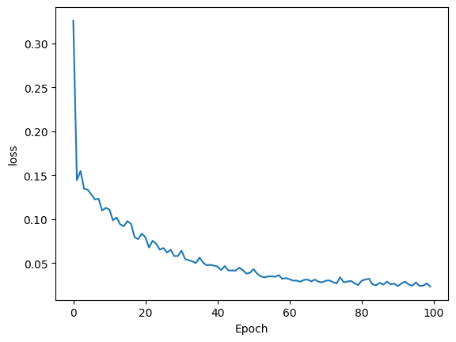

import numpy as np
import tensorflow as tf2 딥러닝 Ch1 실습
2.1 1. 텐서 데이터 만들기
test = tf.constant( 123 ) # 텐서 상수. numpy array 같은 데이터타입임.
test<tf.Tensor: shape=(), dtype=int32, numpy=123>print(test)tf.Tensor(123, shape=(), dtype=int32)test.numpy()123tf.constant([1.2, 5, np.pi], dtype = tf.float32)<tf.Tensor: shape=(3,), dtype=float32, numpy=array([1.2 , 5. , 3.1415927], dtype=float32)>ndarr = np.array([[1,2,3], [4,5,6]])
ndarrarray([[1, 2, 3],
[4, 5, 6]])tsarr = tf.convert_to_tensor( ndarr )
tsarr<tf.Tensor: shape=(2, 3), dtype=int64, numpy=
array([[1, 2, 3],
[4, 5, 6]])>tsones = tf.ones((2,3))
tsones<tf.Tensor: shape=(2, 3), dtype=float32, numpy=
array([[1., 1., 1.],
[1., 1., 1.]], dtype=float32)>2.2 2. 텐서 데이터 타입, 크기
tsarr.shapeTensorShape([2, 3])tsarr.ndim2tsarr.dtypetf.int64tf.cast( tsarr, dtype=tf.float64 )<tf.Tensor: shape=(2, 3), dtype=float64, numpy=
array([[1., 2., 3.],
[4., 5., 6.]])>tsarr[0]<tf.Tensor: shape=(3,), dtype=int64, numpy=array([1, 2, 3])>tsarr[:1,:1]<tf.Tensor: shape=(1, 1), dtype=int64, numpy=array([[1]])>tsarr[0,0]<tf.Tensor: shape=(), dtype=int64, numpy=1>t = tf.random.uniform(shape=(3,4)) # shape 생략 가능
t<tf.Tensor: shape=(3, 4), dtype=float32, numpy=
array([[0.27102935, 0.99095666, 0.82080793, 0.8639691 ],
[0.85583425, 0.93023646, 0.27964818, 0.6046418 ],
[0.6279595 , 0.66343117, 0.95931494, 0.633675 ]], dtype=float32)>t.numpy()array([[0.27102935, 0.99095666, 0.82080793, 0.8639691 ],
[0.85583425, 0.93023646, 0.27964818, 0.6046418 ],
[0.6279595 , 0.66343117, 0.95931494, 0.633675 ]], dtype=float32)tnormal = tf.random.normal((3,4), mean = 0, stddev = 1)
tnormal<tf.Tensor: shape=(3, 4), dtype=float32, numpy=
array([[-1.9991201e+00, 8.1910379e-02, -1.4346092e+00, -1.2580566e+00],
[-1.9888286e-01, -2.6047745e+00, -3.6573273e-01, 1.3136085e+00],
[ 1.3390584e+00, 1.1091279e+00, -1.4892147e+00, -4.3599159e-04]],
dtype=float32)>t_tr = tf.transpose( t )
t_tr<tf.Tensor: shape=(4, 3), dtype=float32, numpy=
array([[0.27102935, 0.85583425, 0.6279595 ],
[0.99095666, 0.93023646, 0.66343117],
[0.82080793, 0.27964818, 0.95931494],
[0.8639691 , 0.6046418 , 0.633675 ]], dtype=float32)>t_sh = tf.reshape( t, shape = (6,2))
t_sh<tf.Tensor: shape=(6, 2), dtype=float32, numpy=
array([[0.27102935, 0.99095666],
[0.82080793, 0.8639691 ],
[0.85583425, 0.93023646],
[0.27964818, 0.6046418 ],
[0.6279595 , 0.66343117],
[0.95931494, 0.633675 ]], dtype=float32)>2.3 3. 수학 연산의 적용
a = tf.constant(10)
b = tf.constant(20)
c = tf.constant(30)ad = tf.add(a,b) # substract, multiply, divide 가능
ad.numpy()30tf.reduce_mean( [a,b,c] ).numpy()20tf.reduce_sum( [a,b,c] ).numpy()60M1 = tf.random.uniform( shape=(5,2), minval=-1.0, maxval=1.0 )
M1<tf.Tensor: shape=(5, 2), dtype=float32, numpy=
array([[-0.9798057 , 0.2996223 ],
[ 0.6667137 , -0.8872769 ],
[-0.8612046 , -0.01308417],
[ 0.87081766, 0.48059368],
[ 0.47037864, 0.9244766 ]], dtype=float32)>M2 = tf.random.normal( shape=(5,2), mean=0, stddev=1 )
M2<tf.Tensor: shape=(5, 2), dtype=float32, numpy=
array([[ 0.46776655, -0.9643099 ],
[ 1.9229217 , -1.1512105 ],
[-1.3375244 , -0.8699059 ],
[ 1.1244664 , -0.9323824 ],
[-0.44402772, -0.86854166]], dtype=float32)>tf.reduce_mean( M1, axis=0 ).numpy()array([0.03337993, 0.1608663 ], dtype=float32)tf.reduce_mean( M1, axis=1 ).numpy()array([-0.3400917 , -0.11028159, -0.4371444 , 0.6757057 , 0.69742763],
dtype=float32)tf.multiply( M1, M2 ).numpy<bound method _EagerTensorBase.numpy of <tf.Tensor: shape=(5, 2), dtype=float32, numpy=
array([[-0.45832035, -0.28892875],
[ 1.2820382 , 1.0214425 ],
[ 1.1518822 , 0.011382 ],
[ 0.9792052 , -0.44809708],
[-0.20886116, -0.80294645]], dtype=float32)>>tf.matmul( M1, tf.transpose(M2) )<tf.Tensor: shape=(5, 5), dtype=float32, numpy=
array([[-0.74724907, -2.229018 , 1.0498708 , -1.3811212 , 0.17482644],
[ 1.1674762 , 2.3034806 , -0.11989848, 1.5769786 , 0.47459757],
[-0.39022553, -1.6409663 , 1.1632642 , -0.9561962 , 0.3937629 ],
[-0.05610187, 1.1212497 , -1.5828111 , 0.5311081 , -0.8040828 ],
[-0.67145455, -0.15976597, -1.4333506 , -0.33304074, -1.0118076 ]],
dtype=float32)>tf.matmul( tf.transpose(M1), M2 )<tf.Tensor: shape=(2, 2), dtype=float32, numpy=
array([[ 2.7459443, -0.2940031],
[-1.4185921, -0.5071478]], dtype=float32)>tf.transpose(M1) @ M2<tf.Tensor: shape=(2, 2), dtype=float32, numpy=
array([[ 2.7459443, -0.2940031],
[-1.4185921, -0.5071478]], dtype=float32)>np.linalg.det( M1 @ tf.transpose(M2) )1.3290616e-21np.linalg.det( tf.transpose(M1) @ M2 )-1.8096701np.linalg.inv( tf.transpose(M1) @ M2 )array([[ 0.28024325, -0.16246226],
[-0.78389543, -1.5173728 ]], dtype=float32)np.linalg.eig(tf.transpose(M1) @ M2 )EigResult(eigenvalues=array([ 2.8694618, -0.6306653], dtype=float32), eigenvectors=array([[ 0.9219415 , 0.08674232],
[-0.38732904, 0.9962308 ]], dtype=float32))tf.norm( M1, ord=2, axis=1 ).numpy<bound method _EagerTensorBase.numpy of <tf.Tensor: shape=(5,), dtype=float32, numpy=
array([1.024594 , 1.1098502, 0.861304 , 0.9946324, 1.0372623],
dtype=float32)>>2.4 4. 텐서 데이터의 분할 및 통합
t = tf.random.uniform((6,))
t.numpy()array([0.3974868 , 0.1660564 , 0.13296926, 0.23851097, 0.8188273 ,
0.17868054], dtype=float32)t_spl = tf.split( t, num_or_size_splits=3 )
[ item.numpy() for item in t_spl ][array([0.3974868, 0.1660564], dtype=float32),
array([0.13296926, 0.23851097], dtype=float32),
array([0.8188273 , 0.17868054], dtype=float32)]t_spl2 = tf.split( t, num_or_size_splits=[4,2])
[ item.numpy() for item in t_spl2 ][array([0.3974868 , 0.1660564 , 0.13296926, 0.23851097], dtype=float32),
array([0.8188273 , 0.17868054], dtype=float32)]t2 = tf.random.uniform((6,3))
t2<tf.Tensor: shape=(6, 3), dtype=float32, numpy=
array([[0.06770313, 0.39880705, 0.0192132 ],
[0.8971355 , 0.26258385, 0.20514679],
[0.9233587 , 0.3713503 , 0.31647992],
[0.2020793 , 0.7772484 , 0.7695662 ],
[0.96660733, 0.99510026, 0.12588048],
[0.656651 , 0.7093884 , 0.20617867]], dtype=float32)>t_spl3 = tf.split( t2, num_or_size_splits=[4,2], axis=0)
[ item.numpy() for item in t_spl3 ][array([[0.06770313, 0.39880705, 0.0192132 ],
[0.8971355 , 0.26258385, 0.20514679],
[0.9233587 , 0.3713503 , 0.31647992],
[0.2020793 , 0.7772484 , 0.7695662 ]], dtype=float32),
array([[0.96660733, 0.99510026, 0.12588048],
[0.656651 , 0.7093884 , 0.20617867]], dtype=float32)]t_conc = tf.concat([t2, tf.reshape(t, (6,1))], axis=1)
t_conc<tf.Tensor: shape=(6, 4), dtype=float32, numpy=
array([[0.06770313, 0.39880705, 0.0192132 , 0.3974868 ],
[0.8971355 , 0.26258385, 0.20514679, 0.1660564 ],
[0.9233587 , 0.3713503 , 0.31647992, 0.13296926],
[0.2020793 , 0.7772484 , 0.7695662 , 0.23851097],
[0.96660733, 0.99510026, 0.12588048, 0.8188273 ],
[0.656651 , 0.7093884 , 0.20617867, 0.17868054]], dtype=float32)>tf.concat([t_conc, tf.random.uniform((1,4))], axis=0)<tf.Tensor: shape=(7, 4), dtype=float32, numpy=
array([[0.06770313, 0.39880705, 0.0192132 , 0.3974868 ],
[0.8971355 , 0.26258385, 0.20514679, 0.1660564 ],
[0.9233587 , 0.3713503 , 0.31647992, 0.13296926],
[0.2020793 , 0.7772484 , 0.7695662 , 0.23851097],
[0.96660733, 0.99510026, 0.12588048, 0.8188273 ],
[0.656651 , 0.7093884 , 0.20617867, 0.17868054],
[0.37776804, 0.5832181 , 0.45536697, 0.59192 ]], dtype=float32)>2.5 5. tf.data를 활용한 데이터 전처리
arr1 = [ 1.1, 2.2, 3.3, 4.4, 5.5, 6.6, 7.7 ]
arr1[1.1, 2.2, 3.3, 4.4, 5.5, 6.6, 7.7]ds1 = tf.data.Dataset.from_tensor_slices( arr1 )
print( ds1 )<_TensorSliceDataset element_spec=TensorSpec(shape=(), dtype=tf.float32, name=None)>for item in ds1:
print(item)tf.Tensor(1.1, shape=(), dtype=float32)
tf.Tensor(2.2, shape=(), dtype=float32)
tf.Tensor(3.3, shape=(), dtype=float32)
tf.Tensor(4.4, shape=(), dtype=float32)
tf.Tensor(5.5, shape=(), dtype=float32)
tf.Tensor(6.6, shape=(), dtype=float32)
tf.Tensor(7.7, shape=(), dtype=float32)2024-09-26 11:19:37.757995: W tensorflow/core/framework/local_rendezvous.cc:404] Local rendezvous is aborting with status: OUT_OF_RANGE: End of sequenceds1_batch = ds1.batch(3)
for item in ds1_batch: print( item )tf.Tensor([1.1 2.2 3.3], shape=(3,), dtype=float32)
tf.Tensor([4.4 5.5 6.6], shape=(3,), dtype=float32)
tf.Tensor([7.7], shape=(1,), dtype=float32)2024-09-26 11:19:37.801993: W tensorflow/core/framework/local_rendezvous.cc:404] Local rendezvous is aborting with status: OUT_OF_RANGE: End of sequencetf.random.set_seed(1)
X = tf.random.uniform( shape = (10,3), dtype = tf.float32 )
Y = tf.range(1, 11)X.numpy()array([[0.16513085, 0.9014813 , 0.6309742 ],
[0.4345461 , 0.29193902, 0.64250207],
[0.9757855 , 0.43509948, 0.6601019 ],
[0.60489583, 0.6366315 , 0.6144488 ],
[0.8893349 , 0.6277617 , 0.53197503],
[0.02597821, 0.44087505, 0.25267076],
[0.8862232 , 0.88729346, 0.78728163],
[0.05955195, 0.0710938 , 0.3084147 ],
[0.25118268, 0.9084705 , 0.47147965],
[0.24238515, 0.63300395, 0.5860311 ]], dtype=float32)Y.numpy()array([ 1, 2, 3, 4, 5, 6, 7, 8, 9, 10], dtype=int32)ds_X = tf.data.Dataset.from_tensor_slices( X )
ds_Y = tf.data.Dataset.from_tensor_slices( Y )
ds_joint = tf.data.Dataset.zip((ds_X, ds_Y))
ds_joint2 = tf.data.Dataset.from_tensor_slices((X, Y))for item in ds_X: print(ds_X)<_TensorSliceDataset element_spec=TensorSpec(shape=(3,), dtype=tf.float32, name=None)>
<_TensorSliceDataset element_spec=TensorSpec(shape=(3,), dtype=tf.float32, name=None)>
<_TensorSliceDataset element_spec=TensorSpec(shape=(3,), dtype=tf.float32, name=None)>
<_TensorSliceDataset element_spec=TensorSpec(shape=(3,), dtype=tf.float32, name=None)>
<_TensorSliceDataset element_spec=TensorSpec(shape=(3,), dtype=tf.float32, name=None)>
<_TensorSliceDataset element_spec=TensorSpec(shape=(3,), dtype=tf.float32, name=None)>
<_TensorSliceDataset element_spec=TensorSpec(shape=(3,), dtype=tf.float32, name=None)>
<_TensorSliceDataset element_spec=TensorSpec(shape=(3,), dtype=tf.float32, name=None)>
<_TensorSliceDataset element_spec=TensorSpec(shape=(3,), dtype=tf.float32, name=None)>
<_TensorSliceDataset element_spec=TensorSpec(shape=(3,), dtype=tf.float32, name=None)>2024-09-26 11:19:37.975953: W tensorflow/core/framework/local_rendezvous.cc:404] Local rendezvous is aborting with status: OUT_OF_RANGE: End of sequencefor item in ds_Y: print(ds_Y)<_TensorSliceDataset element_spec=TensorSpec(shape=(), dtype=tf.int32, name=None)>
<_TensorSliceDataset element_spec=TensorSpec(shape=(), dtype=tf.int32, name=None)>
<_TensorSliceDataset element_spec=TensorSpec(shape=(), dtype=tf.int32, name=None)>
<_TensorSliceDataset element_spec=TensorSpec(shape=(), dtype=tf.int32, name=None)>
<_TensorSliceDataset element_spec=TensorSpec(shape=(), dtype=tf.int32, name=None)>
<_TensorSliceDataset element_spec=TensorSpec(shape=(), dtype=tf.int32, name=None)>
<_TensorSliceDataset element_spec=TensorSpec(shape=(), dtype=tf.int32, name=None)>
<_TensorSliceDataset element_spec=TensorSpec(shape=(), dtype=tf.int32, name=None)>
<_TensorSliceDataset element_spec=TensorSpec(shape=(), dtype=tf.int32, name=None)>
<_TensorSliceDataset element_spec=TensorSpec(shape=(), dtype=tf.int32, name=None)>2024-09-26 11:19:37.989305: W tensorflow/core/framework/local_rendezvous.cc:404] Local rendezvous is aborting with status: OUT_OF_RANGE: End of sequencefor item in ds_joint:
print( item[0].numpy(),':',item[1].numpy() )[0.16513085 0.9014813 0.6309742 ] : 1
[0.4345461 0.29193902 0.64250207] : 2
[0.9757855 0.43509948 0.6601019 ] : 3
[0.60489583 0.6366315 0.6144488 ] : 4
[0.8893349 0.6277617 0.53197503] : 5
[0.02597821 0.44087505 0.25267076] : 6
[0.8862232 0.88729346 0.78728163] : 7
[0.05955195 0.0710938 0.3084147 ] : 8
[0.25118268 0.9084705 0.47147965] : 9
[0.24238515 0.63300395 0.5860311 ] : 102024-09-26 11:19:38.005100: W tensorflow/core/framework/local_rendezvous.cc:404] Local rendezvous is aborting with status: OUT_OF_RANGE: End of sequence# 똑같음
for item in ds_joint2:
print( item[0].numpy(),':',item[1].numpy() )[0.16513085 0.9014813 0.6309742 ] : 1
[0.4345461 0.29193902 0.64250207] : 2
[0.9757855 0.43509948 0.6601019 ] : 3
[0.60489583 0.6366315 0.6144488 ] : 4
[0.8893349 0.6277617 0.53197503] : 5
[0.02597821 0.44087505 0.25267076] : 6
[0.8862232 0.88729346 0.78728163] : 7
[0.05955195 0.0710938 0.3084147 ] : 8
[0.25118268 0.9084705 0.47147965] : 9
[0.24238515 0.63300395 0.5860311 ] : 102024-09-26 11:19:38.018400: W tensorflow/core/framework/local_rendezvous.cc:404] Local rendezvous is aborting with status: OUT_OF_RANGE: End of sequenceds_trans = ds_joint.map( lambda x, y: (x*2-1, y/10))
for item in ds_trans:
print( item[0].numpy(),':',item[1].numpy() )[-0.6697383 0.80296254 0.26194835] : 0.1
[-0.13090777 -0.41612196 0.28500414] : 0.2
[ 0.951571 -0.12980103 0.32020378] : 0.3
[0.20979166 0.27326298 0.22889757] : 0.4
[0.77866983 0.25552344 0.06395006] : 0.5
[-0.9480436 -0.11824989 -0.49465847] : 0.6
[0.7724464 0.7745869 0.57456326] : 0.7
[-0.8808961 -0.8578124 -0.3831706] : 0.8
[-0.49763465 0.816941 -0.05704069] : 0.9
[-0.5152297 0.2660079 0.17206216] : 1.02024-09-26 11:19:38.055700: W tensorflow/core/framework/local_rendezvous.cc:404] Local rendezvous is aborting with status: OUT_OF_RANGE: End of sequenceds_trans2 = ds_joint.map( lambda x, y: ([x[0]+1,x[1]+2,x[2]+3], y/10))
for item in ds_trans2:
print( item[0].numpy(),':',item[1].numpy() )[1.1651309 2.9014812 3.6309743] : 0.1
[1.4345461 2.291939 3.642502 ] : 0.2
[1.9757855 2.4350996 3.660102 ] : 0.3
[1.6048958 2.6366315 3.6144488] : 0.4
[1.8893349 2.6277618 3.531975 ] : 0.5
[1.0259782 2.440875 3.2526708] : 0.6
[1.8862232 2.8872933 3.7872815] : 0.7
[1.059552 2.0710938 3.3084147] : 0.8
[1.2511827 2.9084706 3.4714797] : 0.9
[1.2423851 2.633004 3.586031 ] : 1.02024-09-26 11:19:38.101633: W tensorflow/core/framework/local_rendezvous.cc:404] Local rendezvous is aborting with status: OUT_OF_RANGE: End of sequenceds_shfl = ds_joint.shuffle( buffer_size = len( X ) )
for item in ds_shfl:
print( item[0].numpy(),':', item[1].numpy() )[0.60489583 0.6366315 0.6144488 ] : 4
[0.25118268 0.9084705 0.47147965] : 9
[0.16513085 0.9014813 0.6309742 ] : 1
[0.24238515 0.63300395 0.5860311 ] : 10
[0.4345461 0.29193902 0.64250207] : 2
[0.8862232 0.88729346 0.78728163] : 7
[0.05955195 0.0710938 0.3084147 ] : 8
[0.02597821 0.44087505 0.25267076] : 6
[0.9757855 0.43509948 0.6601019 ] : 3
[0.8893349 0.6277617 0.53197503] : 52024-09-26 11:19:38.157071: W tensorflow/core/framework/local_rendezvous.cc:404] Local rendezvous is aborting with status: OUT_OF_RANGE: End of sequenceds_batch = ds_joint.batch(3, drop_remainder = True )
for item in ds_batch :
print( item[0].numpy(),':', item[1].numpy() )[[0.16513085 0.9014813 0.6309742 ]
[0.4345461 0.29193902 0.64250207]
[0.9757855 0.43509948 0.6601019 ]] : [1 2 3]
[[0.60489583 0.6366315 0.6144488 ]
[0.8893349 0.6277617 0.53197503]
[0.02597821 0.44087505 0.25267076]] : [4 5 6]
[[0.8862232 0.88729346 0.78728163]
[0.05955195 0.0710938 0.3084147 ]
[0.25118268 0.9084705 0.47147965]] : [7 8 9]2024-09-26 11:19:38.177016: W tensorflow/core/framework/local_rendezvous.cc:404] Local rendezvous is aborting with status: OUT_OF_RANGE: End of sequenceds_rpt = ds_joint.batch(3, drop_remainder = True ).repeat( count = 2 )
for item in ds_rpt :
print( item[0].numpy(),':', item[1].numpy() )[[0.16513085 0.9014813 0.6309742 ]
[0.4345461 0.29193902 0.64250207]
[0.9757855 0.43509948 0.6601019 ]] : [1 2 3]
[[0.60489583 0.6366315 0.6144488 ]
[0.8893349 0.6277617 0.53197503]
[0.02597821 0.44087505 0.25267076]] : [4 5 6]
[[0.8862232 0.88729346 0.78728163]
[0.05955195 0.0710938 0.3084147 ]
[0.25118268 0.9084705 0.47147965]] : [7 8 9]
[[0.16513085 0.9014813 0.6309742 ]
[0.4345461 0.29193902 0.64250207]
[0.9757855 0.43509948 0.6601019 ]] : [1 2 3]
[[0.60489583 0.6366315 0.6144488 ]
[0.8893349 0.6277617 0.53197503]
[0.02597821 0.44087505 0.25267076]] : [4 5 6]
[[0.8862232 0.88729346 0.78728163]
[0.05955195 0.0710938 0.3084147 ]
[0.25118268 0.9084705 0.47147965]] : [7 8 9]2024-09-26 11:19:38.190962: W tensorflow/core/framework/local_rendezvous.cc:404] Local rendezvous is aborting with status: OUT_OF_RANGE: End of sequenceds_rpt2 = ds_joint.repeat( count = 2 ).batch(3, drop_remainder = True )
for item in ds_rpt2 :
print( item[0].numpy(),':', item[1].numpy() )[[0.16513085 0.9014813 0.6309742 ]
[0.4345461 0.29193902 0.64250207]
[0.9757855 0.43509948 0.6601019 ]] : [1 2 3]
[[0.60489583 0.6366315 0.6144488 ]
[0.8893349 0.6277617 0.53197503]
[0.02597821 0.44087505 0.25267076]] : [4 5 6]
[[0.8862232 0.88729346 0.78728163]
[0.05955195 0.0710938 0.3084147 ]
[0.25118268 0.9084705 0.47147965]] : [7 8 9]
[[0.24238515 0.63300395 0.5860311 ]
[0.16513085 0.9014813 0.6309742 ]
[0.4345461 0.29193902 0.64250207]] : [10 1 2]
[[0.9757855 0.43509948 0.6601019 ]
[0.60489583 0.6366315 0.6144488 ]
[0.8893349 0.6277617 0.53197503]] : [3 4 5]
[[0.02597821 0.44087505 0.25267076]
[0.8862232 0.88729346 0.78728163]
[0.05955195 0.0710938 0.3084147 ]] : [6 7 8]2024-09-26 11:19:38.204338: W tensorflow/core/framework/local_rendezvous.cc:404] Local rendezvous is aborting with status: OUT_OF_RANGE: End of sequence# ppt 56번 제일 흔하게 씀
ds_all = ds_joint.shuffle( len(X) ).batch( 3 ).repeat( 2 )
for item in ds_all :
print( item[0].numpy(),':', item[1].numpy() )[[0.8893349 0.6277617 0.53197503]
[0.16513085 0.9014813 0.6309742 ]
[0.25118268 0.9084705 0.47147965]] : [5 1 9]
[[0.05955195 0.0710938 0.3084147 ]
[0.9757855 0.43509948 0.6601019 ]
[0.8862232 0.88729346 0.78728163]] : [8 3 7]
[[0.24238515 0.63300395 0.5860311 ]
[0.4345461 0.29193902 0.64250207]
[0.60489583 0.6366315 0.6144488 ]] : [10 2 4]
[[0.02597821 0.44087505 0.25267076]] : [6]
[[0.16513085 0.9014813 0.6309742 ]
[0.02597821 0.44087505 0.25267076]
[0.4345461 0.29193902 0.64250207]] : [1 6 2]
[[0.24238515 0.63300395 0.5860311 ]
[0.8862232 0.88729346 0.78728163]
[0.8893349 0.6277617 0.53197503]] : [10 7 5]
[[0.9757855 0.43509948 0.6601019 ]
[0.05955195 0.0710938 0.3084147 ]
[0.60489583 0.6366315 0.6144488 ]] : [3 8 4]
[[0.25118268 0.9084705 0.47147965]] : [9]2024-09-26 11:19:38.221573: W tensorflow/core/framework/local_rendezvous.cc:404] Local rendezvous is aborting with status: OUT_OF_RANGE: End of sequence2.6 6. 선형회귀분석 (low-lever ver.)
# alpha=0.8, beta=0.2, error term 일반적인 선형회귀식
X = tf.random.uniform( minval=0, maxval=10, shape=(36,))
Y = 0.2 * X + 0.8 + tf.random.normal(mean=0, stddev=0.15, shape=(36, ))import matplotlib.pyplot as plt
plt.plot(X, Y, 'ro', label='Original Data')
# 훈련데이터와 평가데이터로 구분
trainX, testX = tf.split( X, num_or_size_splits= [30, 6] )
trainY, testY = tf.split( Y, num_or_size_splits= [30, 6] )ds_train = tf.data.Dataset.from_tensor_slices( ( trainX, trainY ) )W = tf.Variable( np.random.randn() )
b = tf.Variable( np.random.randn() )print( W.numpy(), b.numpy() )-0.9058514 -0.7786096# y^=wx=b
# L = sum(y^-y)**2
def linear_regression( x ):
return tf.add( tf.multiply( W, x ), b )
def mean_square( ypred, y ):
return tf.reduce_mean( tf.square( y-ypred ) )
optimizer = tf.optimizers.SGD( learning_rate= 0.01 )num_epochs = 100
log_steps = 50
batch_size = 5
steps_per_epoch = int( np.ceil( len(ds_train)/ batch_size ) )
L=[]
ds_train = ds_train.shuffle( buffer_size = len( ds_train ) ).batch( batch_size ).repeat( count=num_epochs )
len( ds_train )600# enumerate : index와 item을 동시에 반환함
for i, batch in enumerate( ds_train ):
bX, bY = batch
# pred, loss의 미니배치별 반복연산을 tape에 저장 (tf.GT함수)
with tf.GradientTape() as tape:
pred = linear_regression( bX )
loss = mean_square( pred, bY ) # 각 미치배치에 대한 MSE
# 미분값 자동 계산하여 gradient 산출 (손실함수, [변수]) > output은 gredient vector 형태
gradients = tape.gradient( loss, [W, b] )
# 위 gredient를 이용해서 W, b의 값 자체를 업데이트시킴
optimizer.apply_gradients( zip( gradients, [W, b] ) )
if i % log_steps == 0 :
print( i, loss.numpy(), W.numpy(), b.numpy() )
L.append( loss.numpy() )0 69.40471 0.11469287 -0.61661613
50 0.43844503 0.39045188 -0.32226366
100 0.46575123 0.33767676 -0.1271174
150 0.12025349 0.33699113 0.04169075
200 0.15756947 0.2899113 0.17330694
250 0.06758316 0.2755403 0.2876421
300 0.071345985 0.27407777 0.38137773
350 0.039882302 0.24708605 0.4576195
400 0.023926783 0.24857457 0.5242689
450 0.012039001 0.22822896 0.57613546
500 0.067414835 0.22391716 0.62088096
550 0.06226217 0.2308571 0.66050012024-09-26 11:19:39.702336: W tensorflow/core/framework/local_rendezvous.cc:404] Local rendezvous is aborting with status: OUT_OF_RANGE: End of sequenceimport matplotlib.pyplot as plt
plt.plot(X, Y, 'ro', label='Original Data')
plt.plot(X, np.array( W * X + b ), label='Fitted Line' )
plt.legend()plt.plot(L, 'bo-')
plt.ylabel('Train Loss')
plt.xlabel('iter')Text(0.5, 0, 'iter')
tpred = linear_regression( testX )
test_mse = mean_square( tpred, testY )
test_mse.numpy()0.050919592.7 7. 선형회귀분석 (tf.keras ver.)
ds_train2 = tf.data.Dataset.from_tensor_slices((trainX, trainY))
ds_train2 = ds_train2.shuffle(30).batch(5)model = tf.keras.models.Sequential()
model.add( tf.keras.layers.Dense(1, input_dim = 1, activation='linear'))
model.summary()/Users/hwan/.pyenv/versions/3.10.14/envs/hwan/lib/python3.10/site-packages/keras/src/layers/core/dense.py:87: UserWarning: Do not pass an `input_shape`/`input_dim` argument to a layer. When using Sequential models, prefer using an `Input(shape)` object as the first layer in the model instead.
super().__init__(activity_regularizer=activity_regularizer, **kwargs)Model: "sequential"
┏━━━━━━━━━━━━━━━━━━━━━━━━━━━━━━━━━┳━━━━━━━━━━━━━━━━━━━━━━━━┳━━━━━━━━━━━━━━━┓ ┃ Layer (type) ┃ Output Shape ┃ Param # ┃ ┡━━━━━━━━━━━━━━━━━━━━━━━━━━━━━━━━━╇━━━━━━━━━━━━━━━━━━━━━━━━╇━━━━━━━━━━━━━━━┩ │ dense (Dense) │ (None, 1) │ 2 │ └─────────────────────────────────┴────────────────────────┴───────────────┘
Total params: 2 (8.00 B)
Trainable params: 2 (8.00 B)
Non-trainable params: 0 (0.00 B)
model.compile( loss='mse', optimizer = tf.keras.optimizers.SGD( learning_rate=0.01 ) )
history = model.fit( ds_train2, epochs=100, verbose=1 )Epoch 1/100
6/6 ━━━━━━━━━━━━━━━━━━━━ 0s 1ms/step - loss: 0.1681
Epoch 2/100
6/6 ━━━━━━━━━━━━━━━━━━━━ 0s 1ms/step - loss: 0.1446
Epoch 3/100
6/6 ━━━━━━━━━━━━━━━━━━━━ 0s 1ms/step - loss: 0.1665
Epoch 4/100
6/6 ━━━━━━━━━━━━━━━━━━━━ 0s 1ms/step - loss: 0.1156
Epoch 5/100
6/6 ━━━━━━━━━━━━━━━━━━━━ 0s 695us/step - loss: 0.1528
Epoch 6/100
6/6 ━━━━━━━━━━━━━━━━━━━━ 0s 3ms/step - loss: 0.1309
Epoch 7/100
6/6 ━━━━━━━━━━━━━━━━━━━━ 0s 1ms/step - loss: 0.1159
Epoch 8/100
6/6 ━━━━━━━━━━━━━━━━━━━━ 0s 1ms/step - loss: 0.1285
Epoch 9/100
6/6 ━━━━━━━━━━━━━━━━━━━━ 0s 2ms/step - loss: 0.1414
Epoch 10/100
6/6 ━━━━━━━━━━━━━━━━━━━━ 0s 670us/step - loss: 0.1199
Epoch 11/100
6/6 ━━━━━━━━━━━━━━━━━━━━ 0s 854us/step - loss: 0.1437
Epoch 12/100
6/6 ━━━━━━━━━━━━━━━━━━━━ 0s 843us/step - loss: 0.0942
Epoch 13/100
6/6 ━━━━━━━━━━━━━━━━━━━━ 0s 1ms/step - loss: 0.1115
Epoch 14/100
6/6 ━━━━━━━━━━━━━━━━━━━━ 0s 1ms/step - loss: 0.0951
Epoch 15/100
6/6 ━━━━━━━━━━━━━━━━━━━━ 0s 1ms/step - loss: 0.0794
Epoch 16/100
6/6 ━━━━━━━━━━━━━━━━━━━━ 0s 1ms/step - loss: 0.1033
Epoch 17/100
6/6 ━━━━━━━━━━━━━━━━━━━━ 0s 783us/step - loss: 0.1107
Epoch 18/100
6/6 ━━━━━━━━━━━━━━━━━━━━ 0s 928us/step - loss: 0.0790
Epoch 19/100
6/6 ━━━━━━━━━━━━━━━━━━━━ 0s 1ms/step - loss: 0.0789
Epoch 20/100
6/6 ━━━━━━━━━━━━━━━━━━━━ 0s 1ms/step - loss: 0.0734
Epoch 21/100
6/6 ━━━━━━━━━━━━━━━━━━━━ 0s 993us/step - loss: 0.0675
Epoch 22/100
6/6 ━━━━━━━━━━━━━━━━━━━━ 0s 791us/step - loss: 0.0678
Epoch 23/100
6/6 ━━━━━━━━━━━━━━━━━━━━ 0s 742us/step - loss: 0.0688
Epoch 24/100
6/6 ━━━━━━━━━━━━━━━━━━━━ 0s 1ms/step - loss: 0.0651
Epoch 25/100
6/6 ━━━━━━━━━━━━━━━━━━━━ 0s 1ms/step - loss: 0.0819
Epoch 26/100
6/6 ━━━━━━━━━━━━━━━━━━━━ 0s 1ms/step - loss: 0.0674
Epoch 27/100
6/6 ━━━━━━━━━━━━━━━━━━━━ 0s 820us/step - loss: 0.0587
Epoch 28/100
6/6 ━━━━━━━━━━━━━━━━━━━━ 0s 988us/step - loss: 0.0911
Epoch 29/100
6/6 ━━━━━━━━━━━━━━━━━━━━ 0s 975us/step - loss: 0.0583
Epoch 30/100
6/6 ━━━━━━━━━━━━━━━━━━━━ 0s 1ms/step - loss: 0.0651
Epoch 31/100
6/6 ━━━━━━━━━━━━━━━━━━━━ 0s 740us/step - loss: 0.0709
Epoch 32/100
6/6 ━━━━━━━━━━━━━━━━━━━━ 0s 627us/step - loss: 0.0492
Epoch 33/100
6/6 ━━━━━━━━━━━━━━━━━━━━ 0s 699us/step - loss: 0.0653
Epoch 34/100
6/6 ━━━━━━━━━━━━━━━━━━━━ 0s 1ms/step - loss: 0.0421
Epoch 35/100
6/6 ━━━━━━━━━━━━━━━━━━━━ 0s 1ms/step - loss: 0.0511
Epoch 36/100
6/6 ━━━━━━━━━━━━━━━━━━━━ 0s 878us/step - loss: 0.0713
Epoch 37/100
6/6 ━━━━━━━━━━━━━━━━━━━━ 0s 676us/step - loss: 0.0476
Epoch 38/100
6/6 ━━━━━━━━━━━━━━━━━━━━ 0s 1ms/step - loss: 0.0532
Epoch 39/100
6/6 ━━━━━━━━━━━━━━━━━━━━ 0s 14ms/step - loss: 0.0485
Epoch 40/100
6/6 ━━━━━━━━━━━━━━━━━━━━ 0s 1ms/step - loss: 0.0441
Epoch 41/100
6/6 ━━━━━━━━━━━━━━━━━━━━ 0s 1ms/step - loss: 0.0466
Epoch 42/100
6/6 ━━━━━━━━━━━━━━━━━━━━ 0s 1ms/step - loss: 0.0356
Epoch 43/100
6/6 ━━━━━━━━━━━━━━━━━━━━ 0s 813us/step - loss: 0.0592
Epoch 44/100
6/6 ━━━━━━━━━━━━━━━━━━━━ 0s 1ms/step - loss: 0.0473
Epoch 45/100
6/6 ━━━━━━━━━━━━━━━━━━━━ 0s 913us/step - loss: 0.0395
Epoch 46/100
6/6 ━━━━━━━━━━━━━━━━━━━━ 0s 941us/step - loss: 0.0423
Epoch 47/100
6/6 ━━━━━━━━━━━━━━━━━━━━ 0s 1ms/step - loss: 0.0375
Epoch 48/100
6/6 ━━━━━━━━━━━━━━━━━━━━ 0s 885us/step - loss: 0.0550
Epoch 49/100
6/6 ━━━━━━━━━━━━━━━━━━━━ 0s 1ms/step - loss: 0.0450
Epoch 50/100
6/6 ━━━━━━━━━━━━━━━━━━━━ 0s 810us/step - loss: 0.0458
Epoch 51/100
6/6 ━━━━━━━━━━━━━━━━━━━━ 0s 1ms/step - loss: 0.0360
Epoch 52/100
6/6 ━━━━━━━━━━━━━━━━━━━━ 0s 1ms/step - loss: 0.0381
Epoch 53/100
6/6 ━━━━━━━━━━━━━━━━━━━━ 0s 847us/step - loss: 0.0296
Epoch 54/100
6/6 ━━━━━━━━━━━━━━━━━━━━ 0s 984us/step - loss: 0.0347
Epoch 55/100
6/6 ━━━━━━━━━━━━━━━━━━━━ 0s 830us/step - loss: 0.0438
Epoch 56/100
6/6 ━━━━━━━━━━━━━━━━━━━━ 0s 2ms/step - loss: 0.0418
Epoch 57/100
6/6 ━━━━━━━━━━━━━━━━━━━━ 0s 973us/step - loss: 0.0328
Epoch 58/100
6/6 ━━━━━━━━━━━━━━━━━━━━ 0s 924us/step - loss: 0.0435
Epoch 59/100
6/6 ━━━━━━━━━━━━━━━━━━━━ 0s 1ms/step - loss: 0.0354
Epoch 60/100
6/6 ━━━━━━━━━━━━━━━━━━━━ 0s 1ms/step - loss: 0.0317
Epoch 61/100
6/6 ━━━━━━━━━━━━━━━━━━━━ 0s 1ms/step - loss: 0.0268
Epoch 62/100
6/6 ━━━━━━━━━━━━━━━━━━━━ 0s 1ms/step - loss: 0.0273
Epoch 63/100
6/6 ━━━━━━━━━━━━━━━━━━━━ 0s 920us/step - loss: 0.0424
Epoch 64/100
6/6 ━━━━━━━━━━━━━━━━━━━━ 0s 1ms/step - loss: 0.0270
Epoch 65/100
6/6 ━━━━━━━━━━━━━━━━━━━━ 0s 1ms/step - loss: 0.0250
Epoch 66/100
6/6 ━━━━━━━━━━━━━━━━━━━━ 0s 1ms/step - loss: 0.0264
Epoch 67/100
6/6 ━━━━━━━━━━━━━━━━━━━━ 0s 1ms/step - loss: 0.0370
Epoch 68/100
6/6 ━━━━━━━━━━━━━━━━━━━━ 0s 866us/step - loss: 0.0263
Epoch 69/100
6/6 ━━━━━━━━━━━━━━━━━━━━ 0s 935us/step - loss: 0.0238
Epoch 70/100
6/6 ━━━━━━━━━━━━━━━━━━━━ 0s 828us/step - loss: 0.0244
Epoch 71/100
6/6 ━━━━━━━━━━━━━━━━━━━━ 0s 845us/step - loss: 0.0207
Epoch 72/100
6/6 ━━━━━━━━━━━━━━━━━━━━ 0s 784us/step - loss: 0.0263
Epoch 73/100
6/6 ━━━━━━━━━━━━━━━━━━━━ 0s 656us/step - loss: 0.0270
Epoch 74/100
6/6 ━━━━━━━━━━━━━━━━━━━━ 0s 3ms/step - loss: 0.0238
Epoch 75/100
6/6 ━━━━━━━━━━━━━━━━━━━━ 0s 865us/step - loss: 0.0431
Epoch 76/100
6/6 ━━━━━━━━━━━━━━━━━━━━ 0s 1ms/step - loss: 0.0302
Epoch 77/100
6/6 ━━━━━━━━━━━━━━━━━━━━ 0s 659us/step - loss: 0.0256
Epoch 78/100
6/6 ━━━━━━━━━━━━━━━━━━━━ 0s 654us/step - loss: 0.0209
Epoch 79/100
6/6 ━━━━━━━━━━━━━━━━━━━━ 0s 702us/step - loss: 0.0206
Epoch 80/100
6/6 ━━━━━━━━━━━━━━━━━━━━ 0s 683us/step - loss: 0.0269
Epoch 81/100
6/6 ━━━━━━━━━━━━━━━━━━━━ 0s 679us/step - loss: 0.0213
Epoch 82/100
6/6 ━━━━━━━━━━━━━━━━━━━━ 0s 629us/step - loss: 0.0304
Epoch 83/100
6/6 ━━━━━━━━━━━━━━━━━━━━ 0s 640us/step - loss: 0.0212
Epoch 84/100
6/6 ━━━━━━━━━━━━━━━━━━━━ 0s 697us/step - loss: 0.0199
Epoch 85/100
6/6 ━━━━━━━━━━━━━━━━━━━━ 0s 667us/step - loss: 0.0238
Epoch 86/100
6/6 ━━━━━━━━━━━━━━━━━━━━ 0s 592us/step - loss: 0.0298
Epoch 87/100
6/6 ━━━━━━━━━━━━━━━━━━━━ 0s 629us/step - loss: 0.0200
Epoch 88/100
6/6 ━━━━━━━━━━━━━━━━━━━━ 0s 749us/step - loss: 0.0323
Epoch 89/100
6/6 ━━━━━━━━━━━━━━━━━━━━ 0s 535us/step - loss: 0.0214
Epoch 90/100
6/6 ━━━━━━━━━━━━━━━━━━━━ 0s 508us/step - loss: 0.0248
Epoch 91/100
6/6 ━━━━━━━━━━━━━━━━━━━━ 0s 535us/step - loss: 0.0242
Epoch 92/100
6/6 ━━━━━━━━━━━━━━━━━━━━ 0s 579us/step - loss: 0.0261
Epoch 93/100
6/6 ━━━━━━━━━━━━━━━━━━━━ 0s 904us/step - loss: 0.0186
Epoch 94/100
6/6 ━━━━━━━━━━━━━━━━━━━━ 0s 564us/step - loss: 0.0297
Epoch 95/100
6/6 ━━━━━━━━━━━━━━━━━━━━ 0s 475us/step - loss: 0.0333
Epoch 96/100
6/6 ━━━━━━━━━━━━━━━━━━━━ 0s 495us/step - loss: 0.0237
Epoch 97/100
6/6 ━━━━━━━━━━━━━━━━━━━━ 0s 617us/step - loss: 0.0273
Epoch 98/100
6/6 ━━━━━━━━━━━━━━━━━━━━ 0s 477us/step - loss: 0.0248
Epoch 99/100
6/6 ━━━━━━━━━━━━━━━━━━━━ 0s 513us/step - loss: 0.0283
Epoch 100/100
6/6 ━━━━━━━━━━━━━━━━━━━━ 0s 429us/step - loss: 0.0233model.weights[<KerasVariable shape=(1, 1), dtype=float32, path=sequential/dense/kernel>,
<KerasVariable shape=(1,), dtype=float32, path=sequential/dense/bias>]W2 = model.weights[0][0][0]
b2 = model.weights[1][0]
print( W2, b2 )tf.Tensor(0.21290928, shape=(), dtype=float32) tf.Tensor(0.7482932, shape=(), dtype=float32)plt.plot(X, Y, 'ro', label='Original Data')
plt.plot(X, np.array( W2 * X + b2 ), label='Fitted Line' )
plt.legend()tpred2 = model.predict( testX )
test_mse2 = mean_square( tpred2, testY )
test_mse2.numpy()1/1 ━━━━━━━━━━━━━━━━━━━━ 0s 22ms/step0.70052314plt.plot(history.history['loss'])
plt.ylabel('loss')
plt.xlabel('Epoch')Text(0.5, 0, 'Epoch')
2.8 Ch2 Neural Network 실습
import pandas as pd
resign_df = pd.read_csv('실습/resign.csv')
resign_df.head()| satisfaction | evaluation | project | workhour | years | accident | resign | promotion | good | |
|---|---|---|---|---|---|---|---|---|---|
| 0 | 0.38 | 0.53 | 2 | 157 | 3 | 0 | 1 | 0 | 0 |
| 1 | 0.80 | 0.86 | 5 | 262 | 6 | 0 | 1 | 0 | 1 |
| 2 | 0.11 | 0.88 | 7 | 272 | 4 | 0 | 1 | 0 | 1 |
| 3 | 0.72 | 0.87 | 5 | 223 | 5 | 0 | 1 | 0 | 1 |
| 4 | 0.37 | 0.52 | 2 | 159 | 3 | 0 | 1 | 0 | 0 |
from sklearn.preprocessing import StandardScaler
scaler = StandardScaler()
resign_df_X = scaler.fit_transform( resign_df.iloc[:, [0, 1, 2, 3, 4, 5, 7]])
resign_df_Y = resign_df['resign']from sklearn.model_selection import train_test_split
x_train, x_test, y_train, y_test = train_test_split(
resign_df_X, resign_df_Y, test_size=0.2, random_state=0)import tensorflow as tf
model = tf.keras.Sequential()
model.add( tf.keras.layers.Dense ( units=3, input_dim=7, activation='relu') )
model.add( tf.keras.layers.Dense ( units=1, activation='sigmoid') )/Users/hwan/.pyenv/versions/3.10.14/envs/hwan/lib/python3.10/site-packages/keras/src/layers/core/dense.py:87: UserWarning: Do not pass an `input_shape`/`input_dim` argument to a layer. When using Sequential models, prefer using an `Input(shape)` object as the first layer in the model instead.
super().__init__(activity_regularizer=activity_regularizer, **kwargs)model.summary()Model: "sequential_1"
┏━━━━━━━━━━━━━━━━━━━━━━━━━━━━━━━━━┳━━━━━━━━━━━━━━━━━━━━━━━━┳━━━━━━━━━━━━━━━┓ ┃ Layer (type) ┃ Output Shape ┃ Param # ┃ ┡━━━━━━━━━━━━━━━━━━━━━━━━━━━━━━━━━╇━━━━━━━━━━━━━━━━━━━━━━━━╇━━━━━━━━━━━━━━━┩ │ dense_1 (Dense) │ (None, 3) │ 24 │ ├─────────────────────────────────┼────────────────────────┼───────────────┤ │ dense_2 (Dense) │ (None, 1) │ 4 │ └─────────────────────────────────┴────────────────────────┴───────────────┘
Total params: 28 (112.00 B)
Trainable params: 28 (112.00 B)
Non-trainable params: 0 (0.00 B)
model.compile( optimizer='sgd', loss='binary_crossentropy', metrics=['accuracy'])result = model.fit( x_train, y_train, validation_split=0.2, epochs=40, verbose=1)Epoch 1/40
300/300 ━━━━━━━━━━━━━━━━━━━━ 0s 738us/step - accuracy: 0.7315 - loss: 0.6126 - val_accuracy: 0.7621 - val_loss: 0.5153
Epoch 2/40
300/300 ━━━━━━━━━━━━━━━━━━━━ 0s 474us/step - accuracy: 0.7626 - loss: 0.5068 - val_accuracy: 0.7625 - val_loss: 0.4653
Epoch 3/40
300/300 ━━━━━━━━━━━━━━━━━━━━ 0s 477us/step - accuracy: 0.7626 - loss: 0.4642 - val_accuracy: 0.7625 - val_loss: 0.4393
Epoch 4/40
300/300 ━━━━━━━━━━━━━━━━━━━━ 0s 470us/step - accuracy: 0.7626 - loss: 0.4398 - val_accuracy: 0.7625 - val_loss: 0.4182
Epoch 5/40
300/300 ━━━━━━━━━━━━━━━━━━━━ 0s 470us/step - accuracy: 0.7626 - loss: 0.4192 - val_accuracy: 0.7625 - val_loss: 0.3986
Epoch 6/40
300/300 ━━━━━━━━━━━━━━━━━━━━ 0s 475us/step - accuracy: 0.7626 - loss: 0.4000 - val_accuracy: 0.7625 - val_loss: 0.3803
Epoch 7/40
300/300 ━━━━━━━━━━━━━━━━━━━━ 0s 472us/step - accuracy: 0.7623 - loss: 0.3822 - val_accuracy: 0.7613 - val_loss: 0.3638
Epoch 8/40
300/300 ━━━━━━━━━━━━━━━━━━━━ 0s 473us/step - accuracy: 0.7602 - loss: 0.3661 - val_accuracy: 0.7721 - val_loss: 0.3488
Epoch 9/40
300/300 ━━━━━━━━━━━━━━━━━━━━ 0s 472us/step - accuracy: 0.7779 - loss: 0.3518 - val_accuracy: 0.8071 - val_loss: 0.3350
Epoch 10/40
300/300 ━━━━━━━━━━━━━━━━━━━━ 0s 474us/step - accuracy: 0.8115 - loss: 0.3390 - val_accuracy: 0.8554 - val_loss: 0.3226
Epoch 11/40
300/300 ━━━━━━━━━━━━━━━━━━━━ 0s 512us/step - accuracy: 0.8507 - loss: 0.3277 - val_accuracy: 0.8654 - val_loss: 0.3117
Epoch 12/40
300/300 ━━━━━━━━━━━━━━━━━━━━ 0s 646us/step - accuracy: 0.8544 - loss: 0.3178 - val_accuracy: 0.8788 - val_loss: 0.3024
Epoch 13/40
300/300 ━━━━━━━━━━━━━━━━━━━━ 0s 574us/step - accuracy: 0.8727 - loss: 0.3094 - val_accuracy: 0.8867 - val_loss: 0.2947
Epoch 14/40
300/300 ━━━━━━━━━━━━━━━━━━━━ 0s 590us/step - accuracy: 0.8815 - loss: 0.3022 - val_accuracy: 0.8942 - val_loss: 0.2881
Epoch 15/40
300/300 ━━━━━━━━━━━━━━━━━━━━ 0s 515us/step - accuracy: 0.8859 - loss: 0.2960 - val_accuracy: 0.8963 - val_loss: 0.2826
Epoch 16/40
300/300 ━━━━━━━━━━━━━━━━━━━━ 0s 499us/step - accuracy: 0.8896 - loss: 0.2907 - val_accuracy: 0.8979 - val_loss: 0.2779
Epoch 17/40
300/300 ━━━━━━━━━━━━━━━━━━━━ 0s 483us/step - accuracy: 0.8908 - loss: 0.2860 - val_accuracy: 0.9000 - val_loss: 0.2737
Epoch 18/40
300/300 ━━━━━━━━━━━━━━━━━━━━ 0s 643us/step - accuracy: 0.8935 - loss: 0.2817 - val_accuracy: 0.9033 - val_loss: 0.2700
Epoch 19/40
300/300 ━━━━━━━━━━━━━━━━━━━━ 0s 472us/step - accuracy: 0.8955 - loss: 0.2781 - val_accuracy: 0.9050 - val_loss: 0.2668
Epoch 20/40
300/300 ━━━━━━━━━━━━━━━━━━━━ 0s 474us/step - accuracy: 0.8982 - loss: 0.2748 - val_accuracy: 0.9042 - val_loss: 0.2639
Epoch 21/40
300/300 ━━━━━━━━━━━━━━━━━━━━ 0s 514us/step - accuracy: 0.8994 - loss: 0.2717 - val_accuracy: 0.9042 - val_loss: 0.2613
Epoch 22/40
300/300 ━━━━━━━━━━━━━━━━━━━━ 0s 557us/step - accuracy: 0.9024 - loss: 0.2690 - val_accuracy: 0.9054 - val_loss: 0.2590
Epoch 23/40
300/300 ━━━━━━━━━━━━━━━━━━━━ 0s 481us/step - accuracy: 0.9042 - loss: 0.2665 - val_accuracy: 0.9058 - val_loss: 0.2570
Epoch 24/40
300/300 ━━━━━━━━━━━━━━━━━━━━ 0s 470us/step - accuracy: 0.9056 - loss: 0.2641 - val_accuracy: 0.9071 - val_loss: 0.2551
Epoch 25/40
300/300 ━━━━━━━━━━━━━━━━━━━━ 0s 473us/step - accuracy: 0.9084 - loss: 0.2620 - val_accuracy: 0.9096 - val_loss: 0.2534
Epoch 26/40
300/300 ━━━━━━━━━━━━━━━━━━━━ 0s 479us/step - accuracy: 0.9085 - loss: 0.2602 - val_accuracy: 0.9112 - val_loss: 0.2520
Epoch 27/40
300/300 ━━━━━━━━━━━━━━━━━━━━ 0s 512us/step - accuracy: 0.9111 - loss: 0.2587 - val_accuracy: 0.9121 - val_loss: 0.2507
Epoch 28/40
300/300 ━━━━━━━━━━━━━━━━━━━━ 0s 580us/step - accuracy: 0.9124 - loss: 0.2574 - val_accuracy: 0.9129 - val_loss: 0.2495
Epoch 29/40
300/300 ━━━━━━━━━━━━━━━━━━━━ 0s 886us/step - accuracy: 0.9125 - loss: 0.2562 - val_accuracy: 0.9150 - val_loss: 0.2485
Epoch 30/40
300/300 ━━━━━━━━━━━━━━━━━━━━ 0s 767us/step - accuracy: 0.9128 - loss: 0.2552 - val_accuracy: 0.9150 - val_loss: 0.2475
Epoch 31/40
300/300 ━━━━━━━━━━━━━━━━━━━━ 0s 518us/step - accuracy: 0.9136 - loss: 0.2542 - val_accuracy: 0.9158 - val_loss: 0.2466
Epoch 32/40
300/300 ━━━━━━━━━━━━━━━━━━━━ 0s 483us/step - accuracy: 0.9138 - loss: 0.2532 - val_accuracy: 0.9158 - val_loss: 0.2458
Epoch 33/40
300/300 ━━━━━━━━━━━━━━━━━━━━ 0s 475us/step - accuracy: 0.9150 - loss: 0.2524 - val_accuracy: 0.9162 - val_loss: 0.2451
Epoch 34/40
300/300 ━━━━━━━━━━━━━━━━━━━━ 0s 484us/step - accuracy: 0.9149 - loss: 0.2515 - val_accuracy: 0.9171 - val_loss: 0.2443
Epoch 35/40
300/300 ━━━━━━━━━━━━━━━━━━━━ 0s 480us/step - accuracy: 0.9148 - loss: 0.2506 - val_accuracy: 0.9162 - val_loss: 0.2437
Epoch 36/40
300/300 ━━━━━━━━━━━━━━━━━━━━ 0s 503us/step - accuracy: 0.9148 - loss: 0.2498 - val_accuracy: 0.9158 - val_loss: 0.2431
Epoch 37/40
300/300 ━━━━━━━━━━━━━━━━━━━━ 0s 551us/step - accuracy: 0.9138 - loss: 0.2491 - val_accuracy: 0.9167 - val_loss: 0.2426
Epoch 38/40
300/300 ━━━━━━━━━━━━━━━━━━━━ 0s 603us/step - accuracy: 0.9139 - loss: 0.2484 - val_accuracy: 0.9171 - val_loss: 0.2420
Epoch 39/40
300/300 ━━━━━━━━━━━━━━━━━━━━ 0s 589us/step - accuracy: 0.9132 - loss: 0.2477 - val_accuracy: 0.9171 - val_loss: 0.2415
Epoch 40/40
300/300 ━━━━━━━━━━━━━━━━━━━━ 0s 511us/step - accuracy: 0.9138 - loss: 0.2470 - val_accuracy: 0.9175 - val_loss: 0.2408import matplotlib.pyplot as plt
import numpy as np
epochs=np.arange(1, 40+1)
plt.plot(epochs, result.history['loss'], label='training loss')
plt.plot(epochs, result.history['val_loss'], label='validation loss')
plt.xlabel('Epochs')
plt.ylabel('Loss')
plt.legend()
plt.show()
# 검증데이터의 loss가 더 낮은게 이상해보일 수 있는데, epoch를 키울수록 훈련데이터가 낮아짐
epochs=np.arange(1, 40+1)
plt.plot(epochs, result.history['accuracy'], label='training accuracy')
plt.plot(epochs, result.history['val_accuracy'], label='validation accuracy')
plt.xlabel('Epochs')
plt.ylabel('Accuracy')
plt.legend()
plt.show()
model.evaluate(x_test, y_test) # 평가데이터를 이용하여 모델 일반화 성능 평가94/94 ━━━━━━━━━━━━━━━━━━━━ 0s 404us/step - accuracy: 0.9167 - loss: 0.2322[0.23656116425991058, 0.9156666398048401]x_test[0, ]array([-0.69516483, -0.85358047, -1.46286291, -1.20241514, -0.34123516,
-0.41116529, -0.14741182])x_new = np.array([-0.7,-0.9,-1.3,-0.9,0.3,0.4,-0.02], dtype=np.float32)
y_pred = model.predict(x_new.reshape(1,7)) # 차원변환 필요
y_pred1/1 ━━━━━━━━━━━━━━━━━━━━ 0s 25ms/steparray([[0.33662271]], dtype=float32)x_new2 = np.array([[-0.7,-0.9,-1.3,-0.9,0.3,0.4,-0.02],[0,0,0,0,0,0,0]])
y_pred2 = model.predict(x_new2)
y_pred21/1 ━━━━━━━━━━━━━━━━━━━━ 0s 26ms/steparray([[0.33662271],
[0.20525527]], dtype=float32)